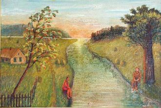
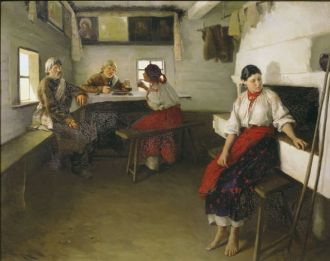
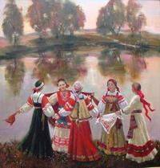

Why don't you feel me?I'm so in needIs it a wonder I resist from you?
I was the one who fell in this gameThen you took me away from you
Разлилась, да разлилась речка быстраяРазлилась, да разлилась речка быстраяЧерез ту речку перекладинка лежитЧерез ту речку перекладинка лежит
Ты не помнишь, как я смеюсь, как плачу, Ты забыл, что я в твоей жизни значу. Как ходили в церковь по воскресеньям, Что сегодня день моего рожденья.
Oh yeahCome on
You get the limo out frontHottest styles, every shoe, every color
В этот серый, скучный вечерЯ тебя случайно встретил,Я позвал тебя с собоюИ назвал своей судьбою.У тебя глаза как море,
Улетай на крыльях ветраТы в край родной, родная песня наша,Туда, где мы тебя свободно пели,Где было так привольно нам с тобою.

Что стоишь, качаясь,Тонкая рябина,Головой склоняясьДо самого тына?
Облака гонят в осень туманНад водой золотой караванПо лесам заплутали дождиС ними я, до капели не жди
На гармошку, на двухрядку, я сирени положу.Веселей играть сегодня гармонисту закажу.
Эээх! Гармонь моя, да гармоночики!Золочёные да уголочики!

Уродилася я,
Как былинка в поле.
Моя молодость прошла
У людей в неволе.
Я с двенадцати лет
По людям ходила,
Липа вековая над рекой шумит,Песня удалая вдалеке звучит.Луг покрыт туманом, словно пеленой,Слышен за курганом звон сторожевой.

Короткий вариант:
Со вьюном я хожу,С золотым я хожу.Я не знаю, куда вьюн положить,Я не знаю, куда вьюн положить.
В роще пел соловушка, там вдали, Песенку о счастье и о любви.Песенка знакомая, и мотив простой.
Ой! Ой как ты мне нравишься.Ой-ёй-ей-ёй!
Пацан молодой,она молодаяНогти красные,такая деловаяОн в костюме черномПо уши в нее влюбленный
Син к1ераме гул дела ду.Хаза сюре вай хьура ю.Вай безамаш хоржура бу.Шайна везарг к1астура ву.Вай безамаш хоржура бу.
1-ый куплет:Вей Безам декхьала ца хилла Чу харцахь са дагу йотинна г1алаГ1уттур яц хьохьа со дог дилла
Вай безам декъалла ца хиллаЧу харцахь са даго йоьтинна г1алаХ1уттур яц хьохьа со дог диллаТ1яхьара б1аьсте кхулаттахь чекх ялла
Свет твоего окнаДля меня погас,Стало вдpуг темно.И стало всё pавно,Есть он или нет,Тот волшебный цвет...Свет твоего окна -
Всі твої бажання здійсняться, знаю я.Силу сподівання маю я. Бажай.Ти своє кохання збережи, пронеси.Кохай.Загадай бажання, не сумуй, чекай.
Постой, затаи дыханиеИ загляни в эти глаза.Смотри, я уже за гранью,Я не могу жить без тебяНебо рифмует наши ладони,Соединяя на века.